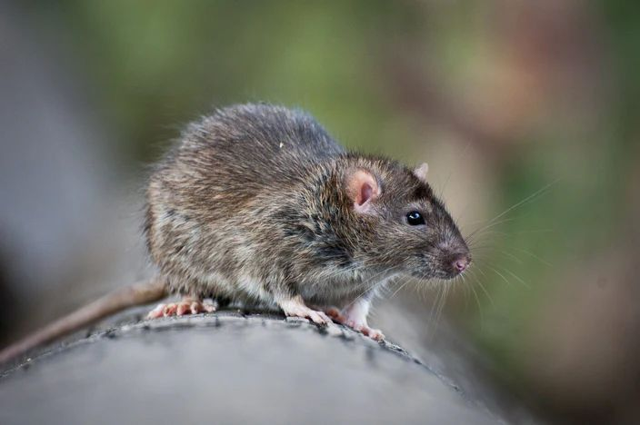
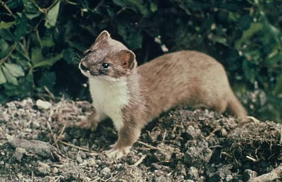
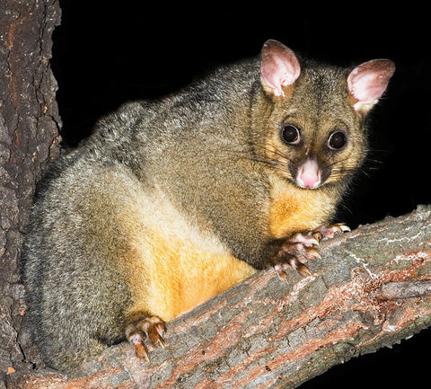
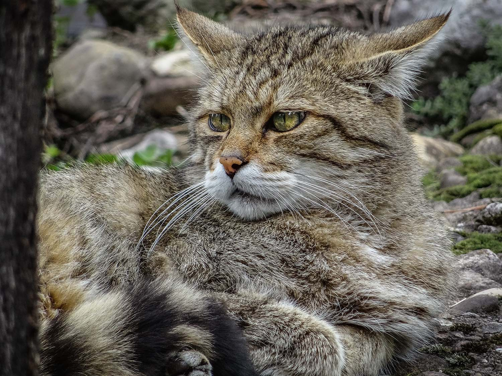

The Fight for Our Wildlife
New Zealand's native birds, lizards, and forests are under constant attack from these introduced predators. Every day without action puts our native special closer to death and extinction. By understanding the threat of these predators and joining pest control movement, we can honour the role of kaitiaki and make our forests more safe.
Rat

Rats were first introduced to NZ with polynesian explorers but later on european ships in the 1800s introduced ship and norway rats. They are found throughout the whole of NZ, from forests to cities. The ship rat is the most in population which damages forests. These rats consume native birds, eggs, chicks, lizards, frogs and weta. They also consume large amounts of native seeds which prevents the forest from making new plants and trees
Stoat

Stoats were first introduced from Britain in the 1870s and 1880s. They are highly adaptable to any environment and found everywhere from beaches to forests. They are great climbers and can swim over 1.5km which makes them an amazing predator as they are aggressive carnivores that hunt by day and night. They are responsible for killing up to 60% of wild kiwi chicks.
Possum

Possums were first introduced to NZ from Australia in the mid 1800s and now millions live across the country, from native forests to scrublands. They are known for killing native trees by stripping leaves, fruit, and bark. They are omnivores which allows them to eat a wide variety of food for example, bird nests to eat eggs and chicks and native land snails.
Feral Cat

Feral Cats were brought into NZ by European explorers from 1769 to control ship rats. Now the population has continued to increase due to stray and domestic cats. They are across coastal areas, farmlands, forests and live away from humans. They are impressive predators that hunt birds, bats, lizards and insects. A single feral cat has been recorded to kill over 100 native bats in a week. They spread a very dangerous disease which affects marine mammals and farmland animals.
New Zealand aims to completely remove rats, stoats, possums, and feral cats by the year 2050. If we come together, we can combat these threats and work towards a predator-free NZ. Explore the solutions page to find out more information about what we can do to these predators.